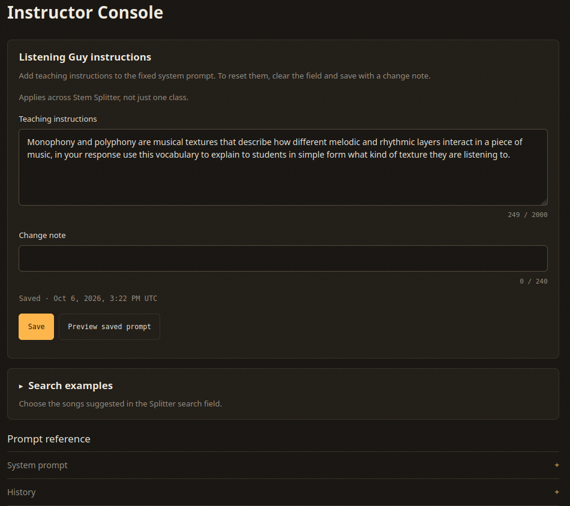

Instructor Console
Give Listening Guy a teaching instruction that names the concepts students should practice and the questions they should test through listening.

Teaching Instructions
Open the Console from Settings or the footer link. The Teaching instructions field accepts up to 2,000 characters. The app adds your text to the fixed system prompt for each guide and answer, while the base prompt stays read-only.
Write as you would brief a tutor. Name the vocabulary students should use, explain their level of experience, and describe a useful next step. Add a change note of up to 240 characters to explain what you changed and why, then save. The app requires that note for each revision.
New answers use the saved instruction immediately. The app regenerates an older guide when someone next requests it after a prompt change. Preview saved prompt shows the assembled prompt that the model receives. History under Prompt reference keeps each revision and its change note. To reset the instruction, clear the field and save with a note.
A Texture Instruction
The demo course asks Listening Guy to explain musical texture in language students can understand without a music background. The instruction names monophony, where performers carry one melodic line, and polyphony, where independent melodic lines sound together. Students can use those terms to describe how parts relate.
A student can then ask whether the bass follows the melody or carries an independent line. The instruction gives Listening Guy a vocabulary for its answer; students still need to hear the stems and test that answer. The model cannot hear the recording.
Writing Instructions Students Can Test
Start with one concept so you can judge how the next answers use it. For a week on texture, ask the model to connect its explanation to a mixer action. For example, write, “After explaining the texture, ask one question students can answer by muting a stem.” The question gives students something to hear and describe.
Tell the model how to handle uncertain details. An instruction such as “If you do not know the exact moment, say so and tell students how to find it” supports the base prompt's limits on invented timestamps. Check a few saved conversations to see whether the model follows the instruction.
A course Console stores instructions for that course's work. The application-wide Console stores a shared instruction for non-course work. These settings are not private to an instructor account. Check the scope notice before saving; each scope keeps its own revision history.
Search Examples
Search examples controls the songs suggested beneath the Internet Archive search field on the Splitter tab. Choose recordings you have checked for audio quality and permission to use, so students can begin with a suitable source.